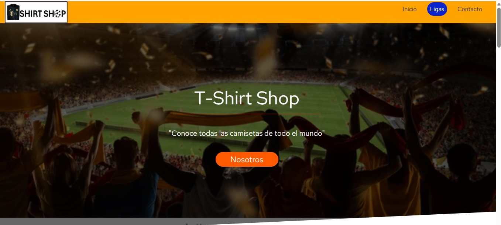

.png)
DRAKE.. | Desarrollo de Software.
Introducción
En este documento de muestra un resumen de algunos de los proyectos de Desarrollo de software más sobresalientes que forman parte de mi experiencia como Ingeniero en Sistemas con ciertos Lenguages de programación y mi relación con herramientas de desarrollo aplicadas a proyectos reales en sectores empresariales.
Sistema de Recursos Hunanos
En este proyecto se desarrollo un sistema de gestión de recursos humanos con la finalidad de poder automatizar el trabajo del departamento de RH ya que no se contaba con un registro de los datos de cada empleado de forma electrónica por lo que solo se tenían registros en hojas lo cual se automatizo con este proyecto, lo que se realizo fue la elaboración de una base de datos a la cual el Jefe de RH podría hacer peticiones desde una página web que se monto en uno de los servidores de la empresa para este proyecto se utilizó el Lenguage de programación Python con el FrameWork Flask Conectados a la base de datos de SQL Server 2016.

Página Web Tienda Camisas de Futbol
En este proyecto real se creo una página web para una tienda que se dedica a la venta de ropa deportiva en especial camisas deportivas de futbol este proyecto se creó con otro compañero de trabajo en esta ocación se me asignaron tareas de de programación en HTML este proyecto se realizo dentro de una plaza por lo que la vizualización se hise de forma interna derivado de este proyecto se creo una copia del proyecto para que se pudiera visualizar nuestro trabajo y estar alojada en internet por lo que se creo una visualización de como funcionaba esta la puedes encontrar en el siguiente link.

Actualizaciones Mantenimiento a Página WEB INTECARTON.
Durante mi paso por la empresa de INTECARTON como Auxiliar de sistemas se me dio la oportunidad de trabajar con la página web de la empresa realizando Actualizaciones, así como, cambios importantes que la empresa consideraba necesrios para mejorar la ateción a los clientes de la empresa.
CRM-Flask
Diseñe un CRM Básico muy funcional para un despacho privado en donde se solicitaba mantener seguros los datos de esta pequeña empresa y se manejara mejor el control de clientes y se generaran campañas de marketing.